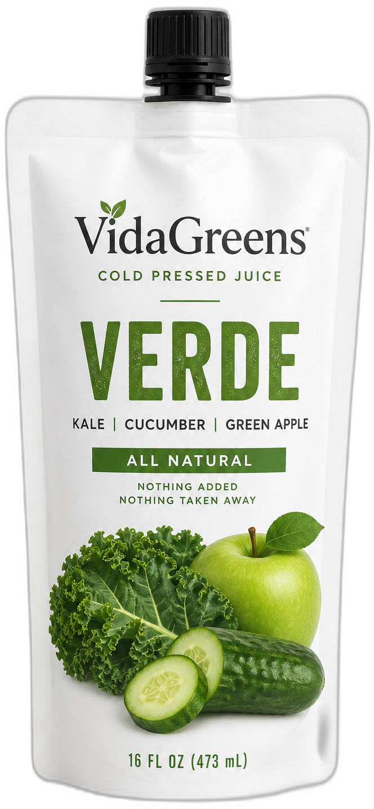
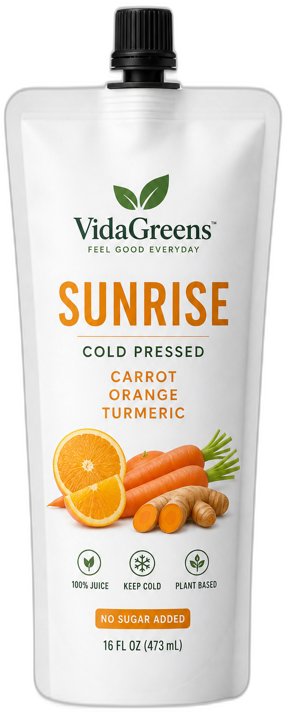
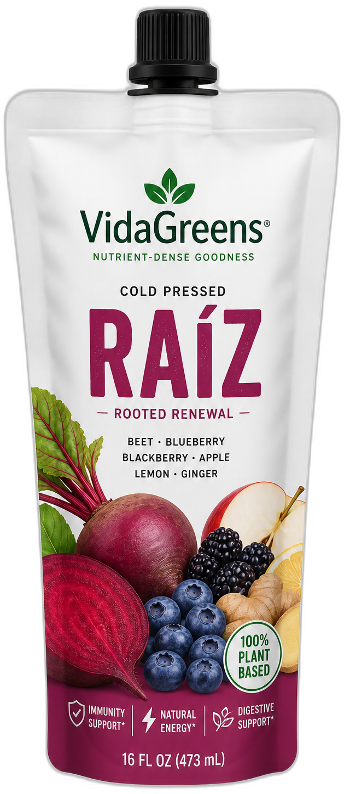
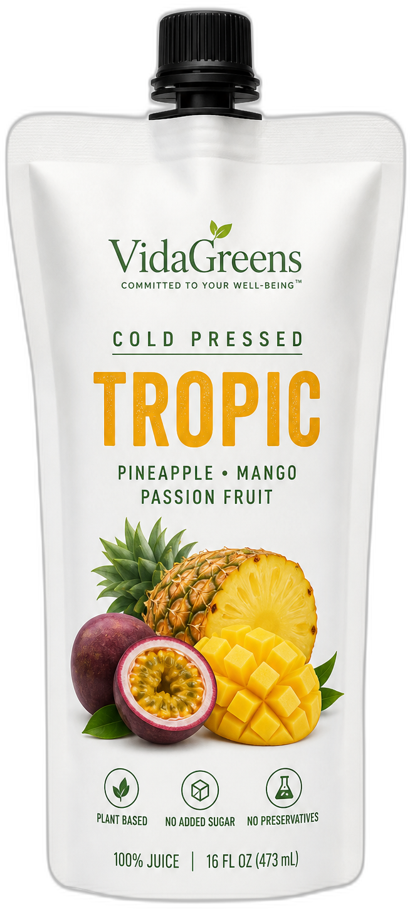

Verde
Kale, cucumber, celery, green apple, lemon, and ginger—bright and clean for every morning.
Kale · Cucumber · Celery · Green apple · Lemon · Ginger

VidaGreens
All-natural. Nothing added. Pressed in Huntington Park and sealed fresh for the day.
16 FL OZ · 473 mL · Cold pressed · All natural
The lineup
Soft matte 16 oz spout pouches—greens, fruit, and plant-based sips for every kind of day.
Kale, cucumber, celery, green apple, lemon, and ginger—bright and clean for every morning.
Kale · Cucumber · Celery · Green apple · Lemon · Ginger

Carrot, orange, turmeric, ginger, and lemon—a warm pour that tastes like Huntington Park mornings.
Carrot · Orange · Turmeric · Ginger · Lemon

Beet and berry rooted in bright citrus—bold color, balanced sweetness, nothing artificial.
Beet · Raspberry · Strawberry · Apple · Lemon

Pineapple, mango, passion fruit, mint, and lime—tropical brightness without the sugar crash.
Pineapple · Mango · Passion fruit · Mint · Lime

Juicy watermelon and ripe strawberry with chia for a soft, satisfying finish—made with real fruit.
Watermelon · Strawberry · Chia · Lemon

Cacao almond drink with real almonds and Dutch cocoa—dairy-free, rich, and smooth.
Almonds · Dutch cocoa · Dates · Vanilla

Sweet blueberry meets leafy greens for an antioxidant-bright press that still tastes like fruit first.
Blueberry · Spinach · Kale · Apple · Lemon

Sunny pineapple lifted by greens—tangy, fresh, and built for an afternoon reset.
Pineapple · Kale · Spinach · Cucumber · Lime
Our promise
If it doesn’t grow, it doesn’t go in the pouch.
The craft
Same cold-press care as a bottle—sealed in a 16 oz spout pouch you can take anywhere.
Peak-ripeness produce. No concentrates. No powders.
Hydraulic cold-press keeps nutrients and flavor intact.
Poured the day it’s made into soft matte 16 oz pouches.
Huntington Park
Pickup at the bar—pressed that morning, waiting in the cooler.